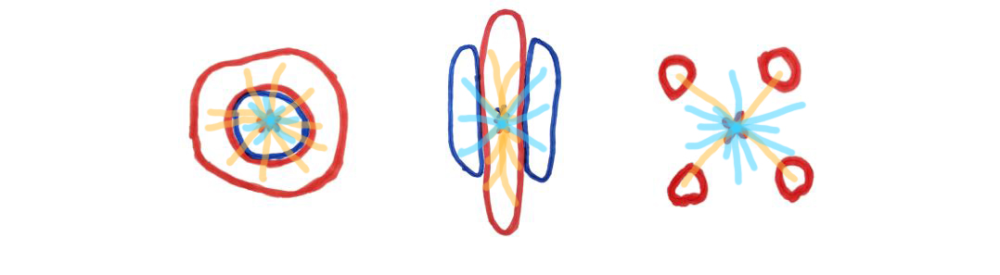

<!-- Linking the css and javascript files -->
<head>
<link rel="stylesheet" type="text/css" href="style.css">
<script src="https://ajax.googleapis.com/ajax/libs/jquery/3.1.0/jquery.min.js"></script>
<script type="text/javascript" src="scripts.js"></script>
</head>
<!--Forward/Backward Arrows-->

<span>
<!--<a href="style.css">-->

<!--</a>-->
</span>

<span>
<!--<a href="images/image1.png">-->

<!--</a>-->
</span>

<!--Put everything inside the body-->
<body id="body">
<footer>
<p class="templateStuff">


The python script was then updated to overcome these challenges. Rather than just relying on the distances between the groups, the average distance to the centre of the group was taken into account as well. This fixes all the previously graphed fail states due to the fact that in each case one group was clearly closer than the other to the shared centre point.

<br>

<br>

However, this doesn’t mean that the updated algorithm is perfect; rather there are still many cases (such as a double layered donut) where data is misinterpreted as being spatially homogeneous. Having said this, the fail states for the new algorithm are much less likely, and are much closer in themselves to spatial homogeneity. 


</p>
</footer>


</body>